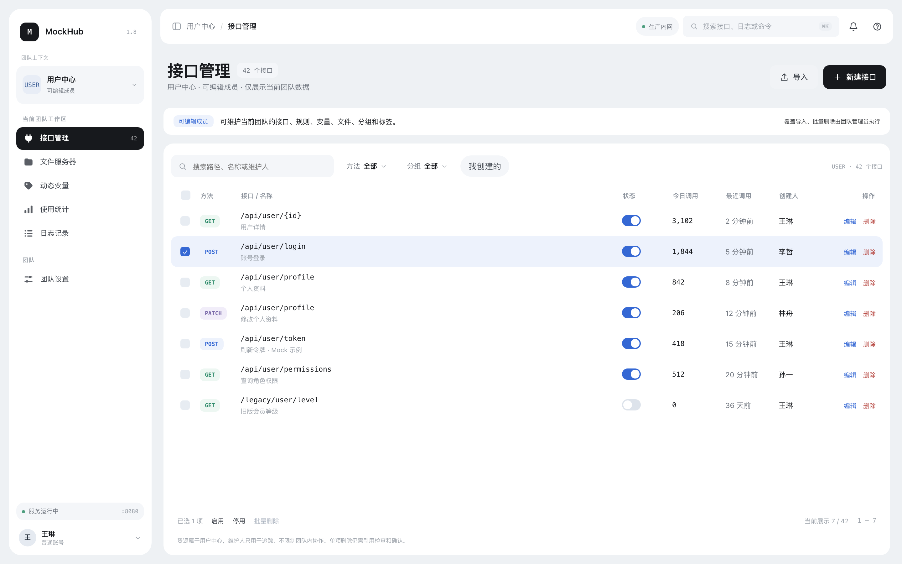
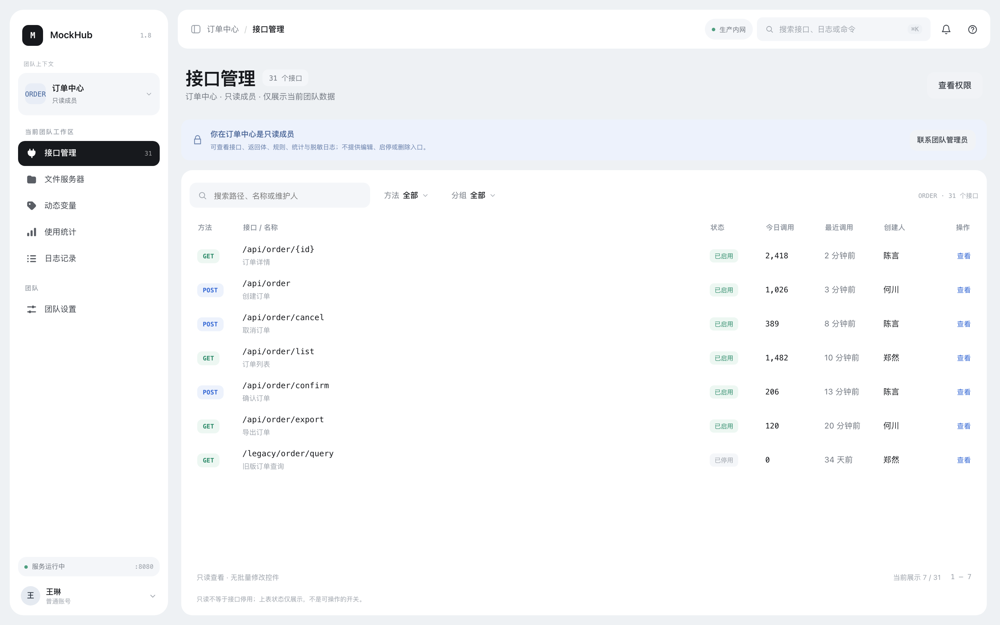
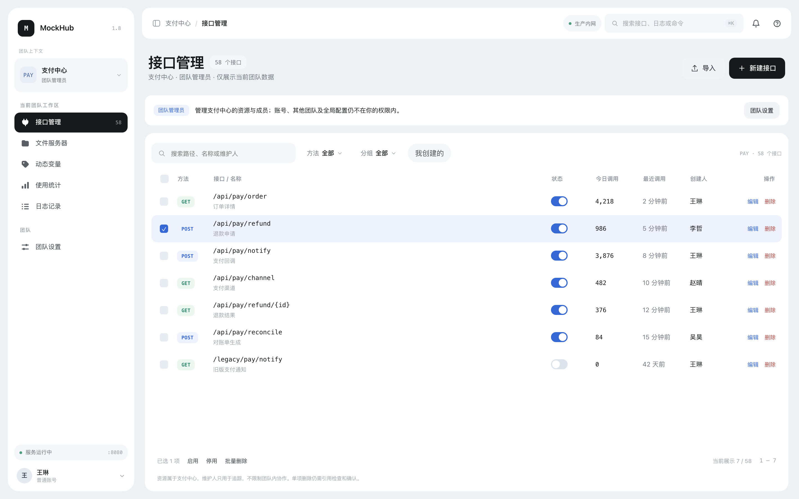
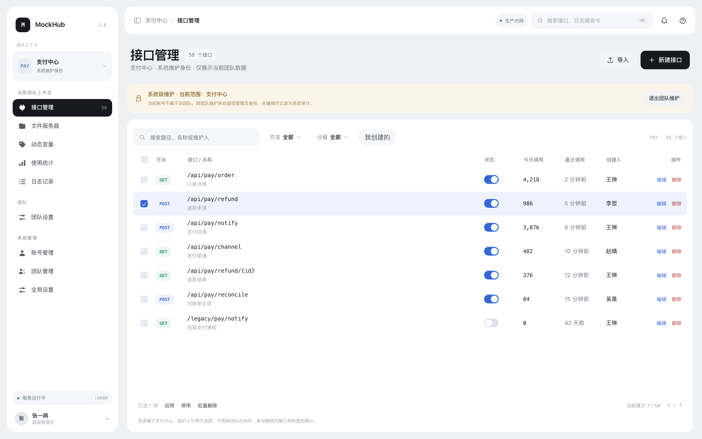
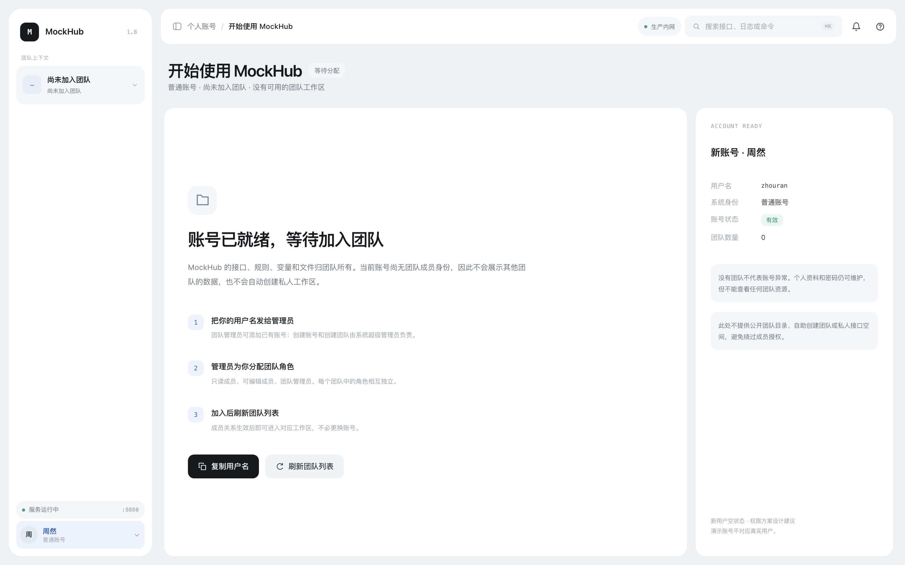
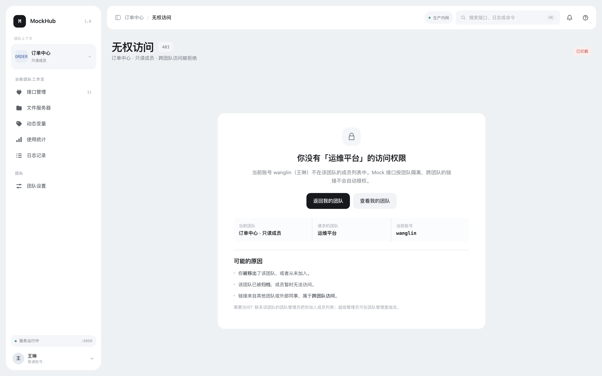
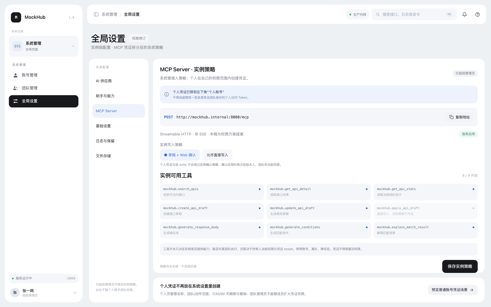
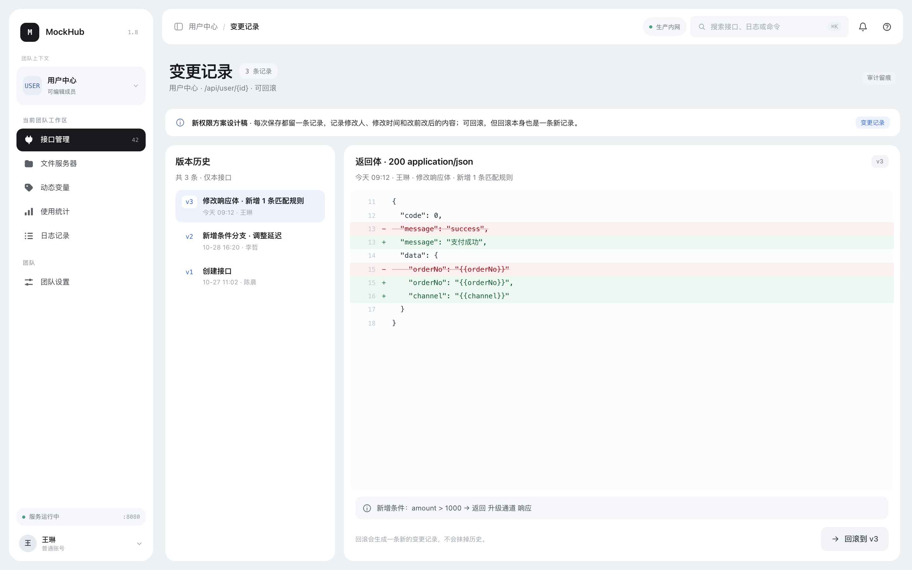

权限清楚，操作才清楚。
保留已定的扁平无阴影视觉，调整账号、团队与系统管理的操作边界。
14 个角色与生命周期场景 · 全部为权限方案提案，不表示业务权限已经实现。
团队工作区与权限07 PAGES

01可编辑成员 · 用户中心
日常维护可用，覆盖导入与批量删除留给管理员

02只读成员 · 订单中心
保留查看、统计和脱敏日志，不显示写操作

13团队管理员 · 支付中心
能管理本团队资源和成员，仍是普通账号

09超级管理员 · 跨团队维护
明确目标团队、系统维护身份与审计范围

10编辑中降权 · 保留草稿
旧页面停止写入，不假装保存、不丢未提交内容

08新账号 · 尚未加入团队
等待成员分配，不自动创建私人空间

19无权限访问 · 403
跨团队访问被拦截，说明原因与求助路径
团队与系统管理10 PAGES

03团队设置 · 管理员
成员角色、添加已有账号与末位管理员保护

11团队信息 · 可编辑成员
可查看团队成员与职责，不可管理成员

12团队信息 · 只读成员
团队信息只读，角色和管理入口保持一致

06系统管理 · 账号
区分系统角色与团队角色，停用需影响检查

07系统管理 · 团队
创建团队指定管理员，归档与跨团队维护分开

14系统管理 · MCP 策略
个人凭证迁到个人账号，系统仅管理实例策略与工具

15回收站 · 可编辑成员
软删除保留 30 天，恢复回到原分组，彻底删除仅管理员

16变更记录 · 可编辑成员
每次保存留痕，可回滚，回滚本身也是一条记录

17新建团队 · 超级管理员
标识唯一且不可修改，必须指派首位管理员

18新建账号 · 超级管理员
全局角色与团队角色分离，一次可分配多个团队